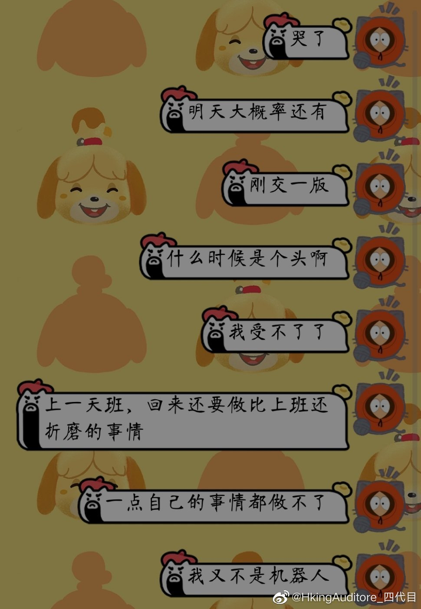

交了一版，我还没洗澡，明天还要上班，结果还搞得这么晚，今晚是不用睡了，一点休息都没有，我都没试过边敲键盘边哭。
三个月了，没完没了。
就5月29号这天，我想画画想了两个星期了，居然真的就一天都没有给我自己做自己想做事情的机会，又要加班，又要看房，还要改论文，我脑子里连画什么都想好了就是不给我一个动笔的机会。
我就和570年前的君十一一样，被奥斯曼的砍刀反复砍杀。
三个月了，没完没了。
就5月29号这天，我想画画想了两个星期了，居然真的就一天都没有给我自己做自己想做事情的机会，又要加班，又要看房，还要改论文，我脑子里连画什么都想好了就是不给我一个动笔的机会。
我就和570年前的君十一一样，被奥斯曼的砍刀反复砍杀。
- 